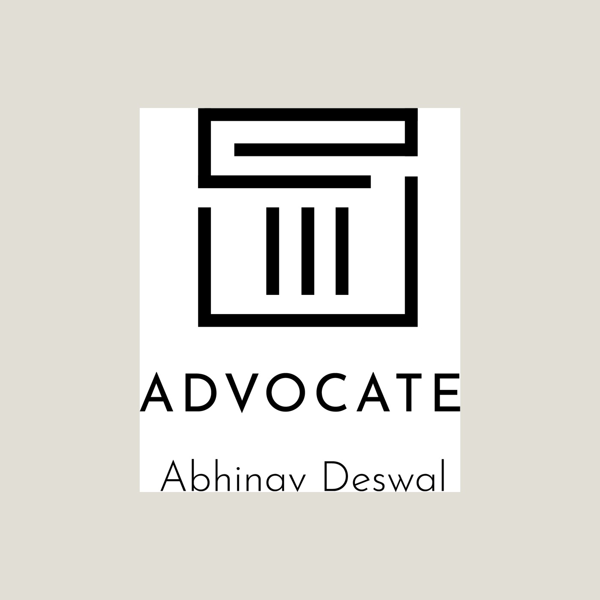
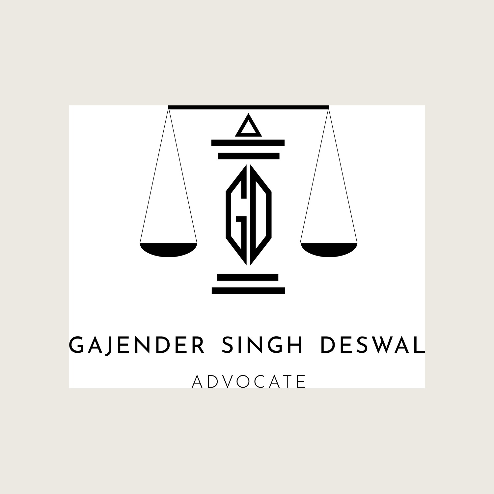
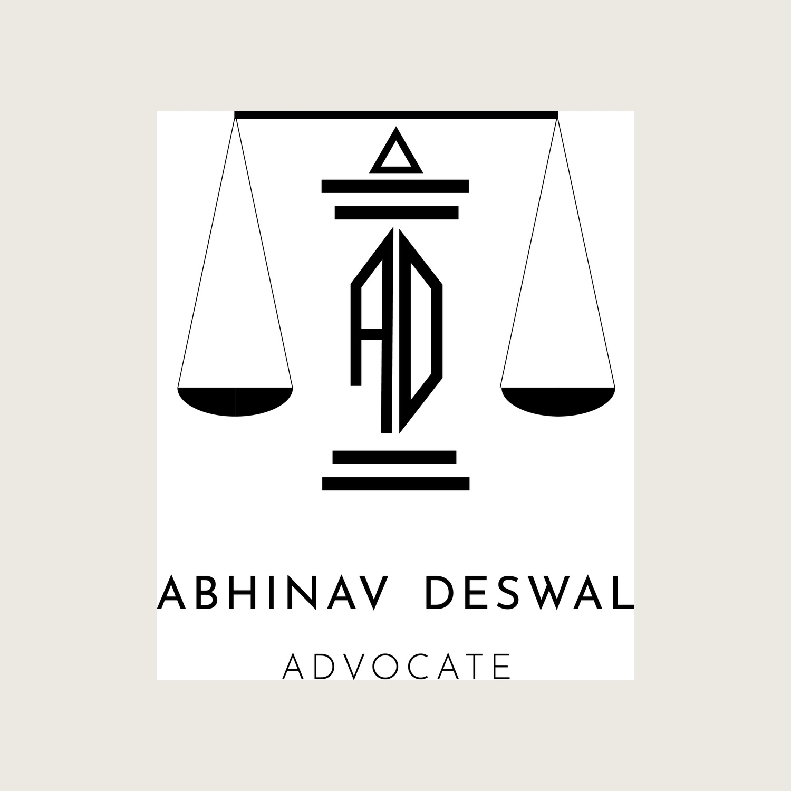

02The Mark



A personal mark for a practising advocate. Instead of setting a name beneath a stock emblem, the interlocked A·D monogram becomes the upright of the scales of justice — the very beam the two pans hang from. The advocate's initials are what hold the balance.

The scales of justice are the most expected symbol an advocate can use — which is exactly why the work was to make them personal. Drawing the A·D monogram as the central column the scales balance on turns a generic emblem into one that could only belong to this person.
The result is sober and professional, set in a fine serif with a restrained, all-caps name — built to sit on a letterhead, a stamp and a brass plate without fuss.


The initials do the structural work.
Reduced on its own, the A·D ligature holds up as a confident serif monogram — the kind that works as a favicon, a wax seal or an embossed corner. An earlier route explored a more architectural, columned mark, but the monogram-as-beam idea was stronger: it fused the person and the profession into a single shape rather than placing one next to the other.
Because the construction is systematic — monogram beam, scales, name, title — it extends cleanly to a second advocate in the practice. Swapping the initials and the name produces a matching mark with no redrawing, so the chambers read as one identity rather than two unrelated logos.